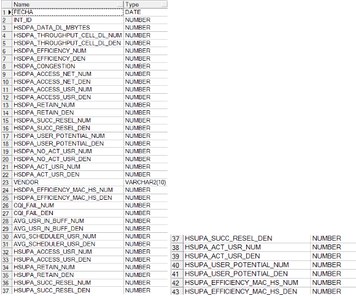

TABLERO PARTICIPACIÓN 4G CIUDAD/MERCADO¶
1) Objetivo¶
El presente documento buscar explicar y detallar el proceso que genera el Tablero Participación 4G.
2) Alcance¶
Áreas involucradas: Performance de Red
4) DESCRIPCIÓN¶
El objetivo del tablero es poder comparar la evolución de las redes 3G y 4G del vendor Nokia, por ciudad y por mercado. Se espera ver una mejora en los diferentes KPIs de 3G a medida que evoluciona el despliegue de la red 4G y más sitios son puestos en servicio comercial.
Los KPIs a visualizar son: tráfico de datos, usuarios simultáneos, accesibilidad de datos, throughput por celda, throuhgput por usuario, cantidad de nodos instalados. La sumarización de los KPIs es day week. Las ciudades a incluír son las capitales de provincia. Los mercados a incluír son los de Argentina y Paraguay.
4.2) DESCRIPCIÓN DE LOS CAMPOS¶
El nombre del tablero ciudad es: Tablero_Participacion4Gciudad
Campos para Ciudad:

El nombre del tablero mercado es: Tablero_Participacion4gmercado
Campos para Mercado:

- FECHA: FECHA DAYWEEK, corresponde al domingo de inicio de la semana, se considera que la semana comienza el domingo y finaliza el sábado.
- TRAFICO HSDPA (HSDPAMACDGB): Tráfico umts hsdpa gb
- DLR99MACDGB: Tráfico umts rl99 gb
- HSDPAACTUSERAVG: Usuarios activos umts hsdpa promedio
- ACCESIBILITYHSDPA: Accesibilidad umts hsdpa
- TRAFFICDLGPRS: Tráfico GSM GPRS DL GB
- TRAFFICDLEDGE: TRAFICO GSM EDGE DL GB
- TRAFICO LTE (TRAFFICDL4G): Tráfico LTE DL GB
- ACCESIBILITYLTE: Accesibilidad lte
- LTEACTUSERAVG (CELL_LOAD_ACT_UE_AVG): Usuarios activos lte promedio
- TRAFICO TOTAL : Tráfico umts hsdpa gb + Tráfico umts rl99 gb + Tráfico gsm gprs dl gb + Tráfico gsm edge dl gb + Tráfico lte dl gb
- PARTICIPACIÓN 4G: Trafico lte dl gb / Tráfico total
- SITIO3G_U: Cantidad de sitios 3g simple portadora
- SITIO3G_D: Cantidad de sitios 3g doble portadora
- SITIO3G_S: Cantidad de sitios 3g 4 - 6 sectores
- SITIO3G_T: Cantidad de sitios 3g tercera portadora
- SITIO3G: Cantidad de sitios 3g
- SITIO4G: Cantidad de sitios 4g
- THP_USER_3G: Throughput de usuario 3g
- THP_CELL_3G: Throughput de celda 3g
- THP_CELL_LTE: Throughput de celda 4g
- THP_USER_LTE: Throughput de usuario 4g
SERVER
perdido.claro.amx (10.92.50.83) a falda.claro.amx(10.92.56.198)
BASE DE DATOS
Oracle 10G. Instancia DSMART2
TIEMPO DE EJECUCIÓN
Se ejecuta los días lunes a las 15 pm (cada 7 dias)
FRECUENCIA
Semanal
DURACIÓN DEL PROCESO
2 minutos aprox
UBICACIÓN DEL PROCESO
calidad/Tableros/RunAllTableros.kjb
LOGUEO DEL PROCESO
El logueo del proceso se realiza en la ubicación calidad/tableros/PentahoLogs
5) MACRO FLUJO¶
6. DESCRIPCIÓN GENERAL¶
6.1. Datos Origen¶
- Server Origen: perdido.claro.amx
- Cantidad de archivos origen: No contiene
- Frecuencia actualización: Frecuencia semanal
6.2. Datos Destino¶
- Server Destino: falda.claro.amx
- Conversión de Archivos: No
- Tabla Files: No
- Tabla Auxiliar: No
- Frecuencia de corrida del proceso: 1 vez a la semana
- Regionales: No
- RAW Si/No: No
- Hour Si/No: No
- Day Si/No: No
- BH Si/No: No
- Day Week: Si
- Países: Argentina
- Directorio Destino (File System): /calidad/tableros
6.3. Tablas Utilizadas¶
Tablas utilizadas para almacenar los datos de los reportes:
- TABLERO_PARTICIPACION4GCIUDAD
- TABLERO_PARTICIPACION4GMERCADO
Tablas consultadas para armar los reportes:
- ALM_MERCADO
- LTE_NSN_SERVICE_NE_DAYW
- MULTIVENDOR_GPRS_DAYW
- OBJECTS_SP_GSM
- OBJECTS_SP_LTE
- OBJECTS_SP_LTE_NE
- OBJECTS_SP_UMTS
- OBJECTS_SP_UMTS_NE
- UMTS_NSN_HSDPA_MKT_DAYW
- UMTS_NSN_HSDPA_WCEL_DAYW
- UMTS_NSN_SERVICE_MKT_DAYW
- UMTS_NSN_SERVICE_WCEL_DAYW
- UMTSC_NSN_HSDPA_MKT_DAYW
- UMTSC_NSN_HSDPA_WCEL_DAYW
- UMTSC_NSN_MACD_WCEL_DAYW
6.4. Pentaho¶
Estructura del proyecto:

- Proceso Pentaho End to End
- Proceso LlenadoTablero
En este proceso se setea variables de entorno, tiene dos transformaciones:
- tablero Ciudad
- tablero Mercado
- Proceso Generar xls:
En este proceso se obtiene el archivo de formato xls para generar el email
- Proceso Generar reporte HTML
Este proceso genera el contenido del email en formato html para ciudad y mercado
7) DESCRIPCIÓN DETALLADA¶
El Shell Script:
Los procesos .sql denominado ciudad.sql y mercado.sql:
La ejecución de los procesos nos muestra los siguientes resultados:
Cuidad:
Mercado:

8. REPROCESO¶
Macroflujo de Reproceso
En este macroflujo de reproceso se agrega el paso de borrado de semana a reprocesar a diferencia del macroflujo original.
El paso de borrado a semana a reprocesar se encarga de borrar la semana completa a reprocesar con la finalidad de obtener la consistencia de los datos reprocesados.
1) Reproceso En Pentaho:¶
El proceso se presiona el botón ejecutar, luego se deben ingresar los parametros (FECHA_INICIO_REWORK Y FECHA_FIN_REWORK) con formato DD.MM.YYYY.
2) Reproceso por Consola¶
Se debe correr de la siguiente manera:
Se debe agregar la fecha del día a reprocesar
9. CONTROL DE CAMBIOS¶
| Fecha | Responsable | Ticket Jira | Detalle | Repositorio |
|---|---|---|---|---|